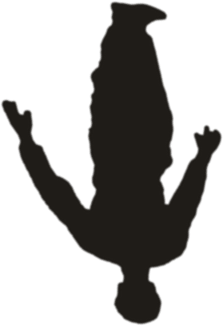

쌀 · 누룩 · 물
해남 쌀과 누룩, 물로 빚는 막걸리.서울 마포의 양조장에서 만듭니다.
감미료를 넣지 않고, 쌀과 누룩, 물로만 빚습니다. 오래 발효하고 숙성한 막걸리 한 잔을 식탁 위에 올립니다.
48일 발효·숙성한 전통 삼양주
56일 이상 완전 발효한 원주
DEEP 원주에 가수한 12도
찹쌀과 타트체리, 천연 미탄산



 초월
방문 예약
초월
방문 예약